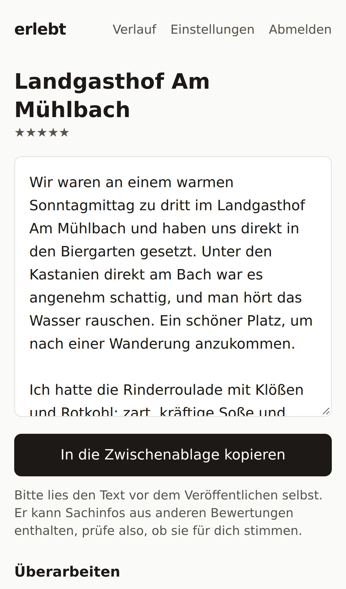
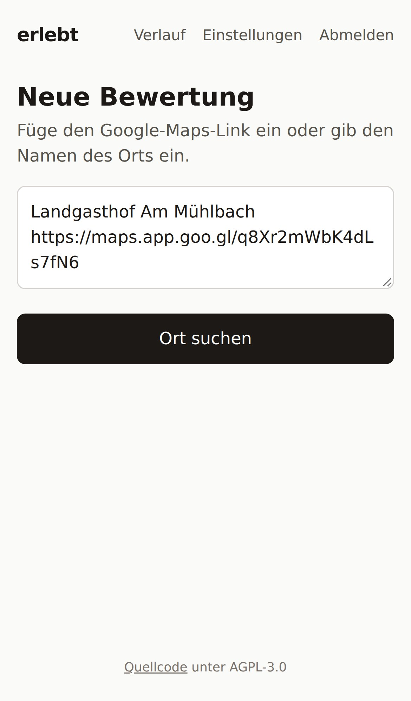
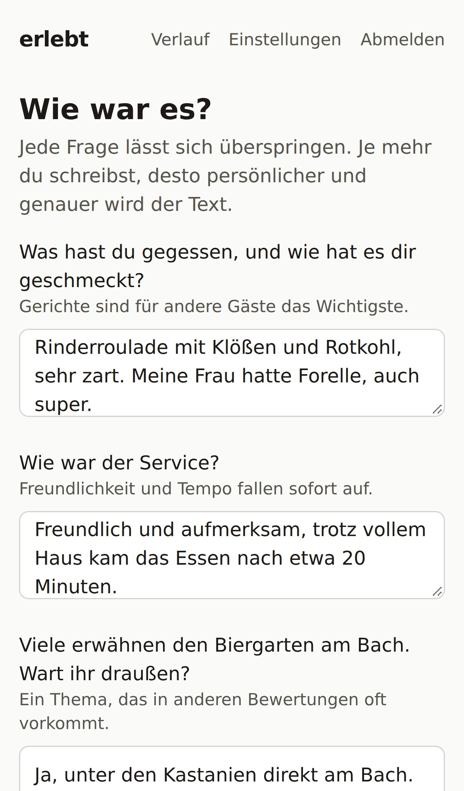

Fragen statt leerem Feld
Die Fragen passen zum Ort: Gerichte und Service im Restaurant, Zimmer und Frühstück im Hotel, Termintreue beim Handwerker. Was andere oft erwähnen, wird zur Frage.
erlebt macht aus einem Link aus Google Maps und vier bis sechs Fragen zu deinem Besuch einen fertigen Bewertungstext. Du liest ihn, kopierst ihn und veröffentlichst ihn selbst.
Quellcode auf GitHub ansehen
Eine Bewertung hilft anderen nur, wenn sie konkret ist. Genau das kostet Zeit, und deshalb schreibt man sie meistens nie.
Ein leeres Feld, ein Satz wie „War super, gerne wieder“ und keine Antwort auf das, was andere wissen wollen: Was habt ihr gegessen, wie war der Service, lohnt sich der Preis?
Gezielte Fragen zu genau diesem Ort. Du antwortest in Stichworten, erlebt formuliert daraus einen zusammenhängenden Text in der Länge und im Ton, den du wählst.
erlebt nimmt dir das Formulieren ab, nicht das Erleben.
Die Fragen passen zum Ort: Gerichte und Service im Restaurant, Zimmer und Frühstück im Hotel, Termintreue beim Handwerker. Was andere oft erwähnen, wird zur Frage.
Eigene Erlebnisse stammen ausschließlich aus deinen Antworten. Bewertungen anderer ergänzen höchstens Sachinfos über den Ort und werden nicht gespeichert.
Läuft im Browser, direkt nach dem Besuch. Ein Knopf kopiert den Text, und mit „kürzer“ oder „persönlicher“ passt du ihn an.
Du betreibst erlebt selbst, mit eigenem Login und eigenen API Schlüsseln. Ein Tageslimit hält die Kosten im Griff.
Du erzählst, was du erlebt hast. erlebt findet die Worte, die anderen bei ihrer Entscheidung helfen.
Ein Durchlauf dauert nur wenige Minuten, am Rechner wie am Handy.
Kopiere den Link aus Google Maps oder tippe den Namen des Orts. erlebt erkennt Name, Adresse und Gesamtnote.

Vier bis sechs Fragen zu deinem Besuch, jede lässt sich überspringen. Danach wählst du Sterne, Länge und Ton.

Der Text erscheint mit einem Knopf zum Kopieren. Du prüfst ihn und veröffentlichst ihn selbst bei Google.
erlebt ist ein fertiges Docker Image. Du brauchst nur eine Compose Datei, eine Datenbank und deine Schlüssel.
# deploy/docker-compose.coolify.yml (Auszug)
services:
app:
image: ghcr.io/roberteinsle/erlebt:latest
environment:
- APP_KEY=${APP_KEY}
- APP_URL=${APP_URL}
- DB_HOST=${DB_HOST}
- ANTHROPIC_API_KEY=${ANTHROPIC_API_KEY}
- GOOGLE_PLACES_API_KEY=${GOOGLE_PLACES_API_KEY:-}
- ADMIN_EMAIL=${ADMIN_EMAIL}
- ADMIN_PASSWORD=${ADMIN_PASSWORD}
networks:
- coolifyDie Software ist kostenlos und steht unter der AGPL 3.0. Kosten entstehen nur bei den Diensten, die du anbindest: Die Claude API rechnet Anthropic nach Verbrauch ab, Google Places hat ein monatliches Freikontingent. Ein Tageslimit in der App begrenzt die Zahl der Durchläufe.
Nein. erlebt erzeugt nur den Text. Du kopierst ihn und veröffentlichst ihn selbst, nachdem du ihn gelesen hast.
Eigene Erlebnisse stammen nur aus deinen Antworten. Sachinfos über den Ort, etwa zum Angebot oder zur Lage, können aus anderen Bewertungen ergänzt werden. Ein Sprachmodell kann trotzdem danebenliegen, deshalb liest du jeden Text vor dem Veröffentlichen.
Nein, es gibt kein Scraping. erlebt nutzt ausschließlich die offizielle Places API. Sie liefert pro Ort höchstens fünf Bewertungen, die nur für die Fragen und Sachinfos verwendet werden.
Nein. Ohne Schlüssel gibst du den Namen des Orts selbst ein und bekommst allgemeine Fragen statt ortsgenauer.
Standardmäßig Claude Haiku 5.5 für die Fragen und Claude Sonnet 5.5 für den Text. In den Einstellungen der App wählst du andere Modelle und prüfst, ob alle Schnittstellen funktionieren.
Nein. erlebt ist für den Eigengebrauch gedacht: Jede Instanz hat einen Login und läuft mit den Schlüsseln ihres Betreibers.
In deiner eigenen Datenbank liegen der Ort, deine Antworten und die erzeugten Texte, damit du sie im Verlauf wiederfindest. Bewertungen anderer werden nicht gespeichert. Für die Texte gehen Anfragen an Anthropic und, falls eingerichtet, an Google.
Bewerte nur Orte, die du selbst besucht hast. erlebt hilft beim Formulieren, für Inhalt und Veröffentlichung bist du verantwortlich.
Kostenlos und quelloffen. Du zahlst nur die Nutzung der APIs direkt bei Anthropic und Google, ohne Abo und ohne Vertrag.
Quellcode auf GitHub ansehen